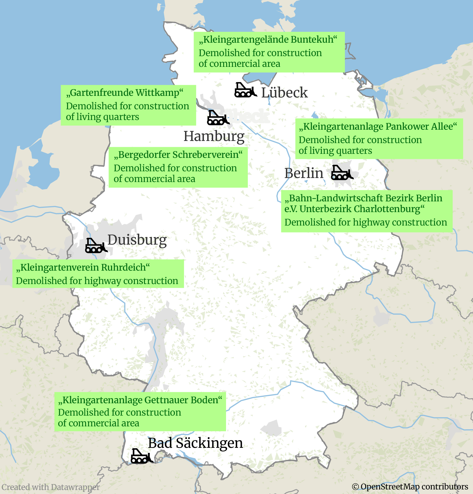
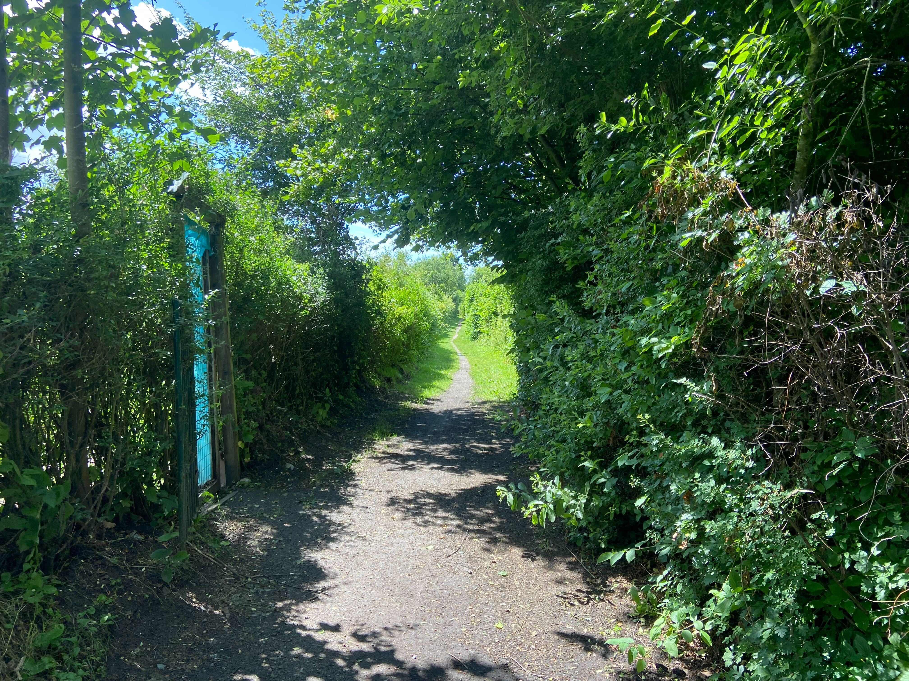

Allotment gardens in Germany: Disappearance of a modern utopia
'Schrebergärten', rental gardens in Germany, are meant to provide affordable gardening spaces to those in need. But they are in the process of disappearing - despite heightened interest by young people in bigger cities.
By Hanna Sellheim
As a child, I had a friend whose family owned a 'Schrebergarten', a small garden they rented close to their home, an apartment in one of the biggest cities in Germany. We would spend hours there, playing, making up stories about living on a farm. Although the garden was located in the middle of our borough, next to a busy street, it seemed like we were in our own world.
All over Europe, Germany has by far the most allotment gardens. Historically, 'Schrebergärten' or 'Kleingärten' have served mainly three functions:
Providing gardening spaces to those in need by offering them at an affordable rate.
Adding green spaces for leisure and education to cities and hence, improving quality of life and having a positive environmental impact.
However, that doesn't seem to be the case anymore.
Severe housing shortage has caused many of the garden areas to be torn down to build new housing units. But that is not the only reason for demolition, as examples from the past months show:

A look at the number of members at Germany's biggest allotment garden society, the Bundesverband der Kleingartenvereine Deutschlands e.V. (BKD), shows a constant decline for years. The only exception: a stabilization shortly after the Covid pandemic when lockdowns were restricting public life and resurging a longing for private green spaces.
Reasons for garden demolitions are mostly either construction work or vacancies, says Sandra von Rekowski, a spokesperson for the BKD. There seems to be an ambivalent trend unfolding.

In the countryside, especially the East, more and more allotment gardens stay empty.
On the contrary, the demand for rental gardens in Germany's bigger cities is high. According to the same study, 3500 to 4000 rental gardens are lacking in Hamburg.
Allotment gardens used to have an image of being utterly middle-class, their associations full of people who really, really cared about things such as the correct height of a hedge. But an increasingly unaffordable housing market has made allotment garden more attractive for younger people. Getting together with a group of friends and sharing the cost and responsibility for the garden has become a trend.
This shows in the data available on the average age of allotment garden users: They are younger than they used to be.
But: accessibility varies highly across the country.
Looking at the number of allotment gardener users compared to the population, it becomes obvious that the density is much higher in the former GDR. This can be understood as a result of the GDR‘s (albeit deeply flawed) socialist agenda.
If we compare this to a map of German states and their average annual income, we can see: The states with lower income also are the ones with most allotment gardens, suggesting the original idea of providing rental garden units to people unable to afford houses with private garden has generally been successful.
When looking at the biggest cities in Germany, the unequal distribution becomes even more obvious: Leipzip and Dresden, cities in the East, offer about ten times as many rental gardens per 100 inhabitants as the Southern cities of Munich and Stuttgart.
So, is the utopian vision of a country where everybody has access to gardening units at an affordable rent forgotten amidst housing, security and climate crises? Not entirely, it seems. Some cities have started to take action against this trend: Berlin is working on a law that will protect its allotment gardens.